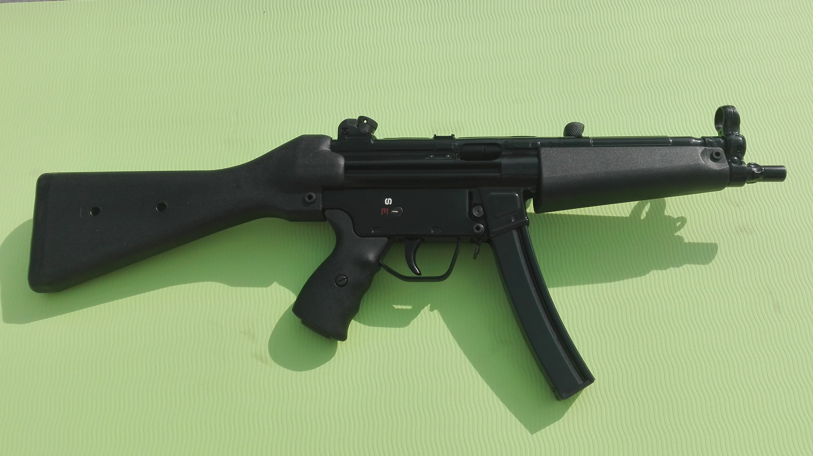

MP5
Pistolet maszynowy MP5 wszedł w 1966 roku na wyposażenie niemieckiej policji federalnej i granicznej oraz niektórych oddziałów wojskowych Niemiec i innych krajów. W następnych latach stał się jednym z najpopularniejszych typów pistoletów maszynowych.Pistolety maszynowe są obecnie powszechne w większości grup specjalnych w Polsce. Pierwszym użytkownikiem MP5 była JW 2305 (GROM), która do dziś używa różnych modeli tej broni, m.in.: MP5A3 z oświetleniem taktycznym, MP5SD6, MP5K. Następnie pistolety MP5 (początkowo wersja na licencji tureckiej) trafiły do policyjnych antyterrorystów.
